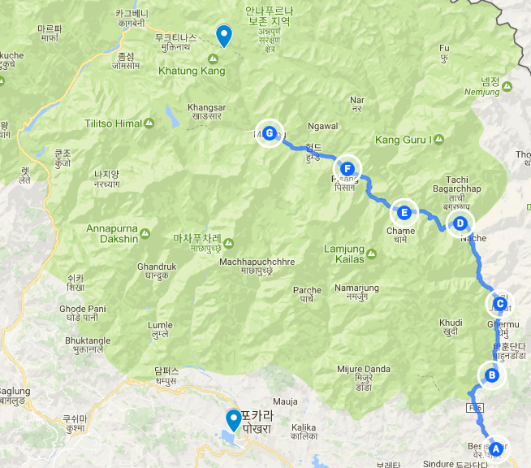
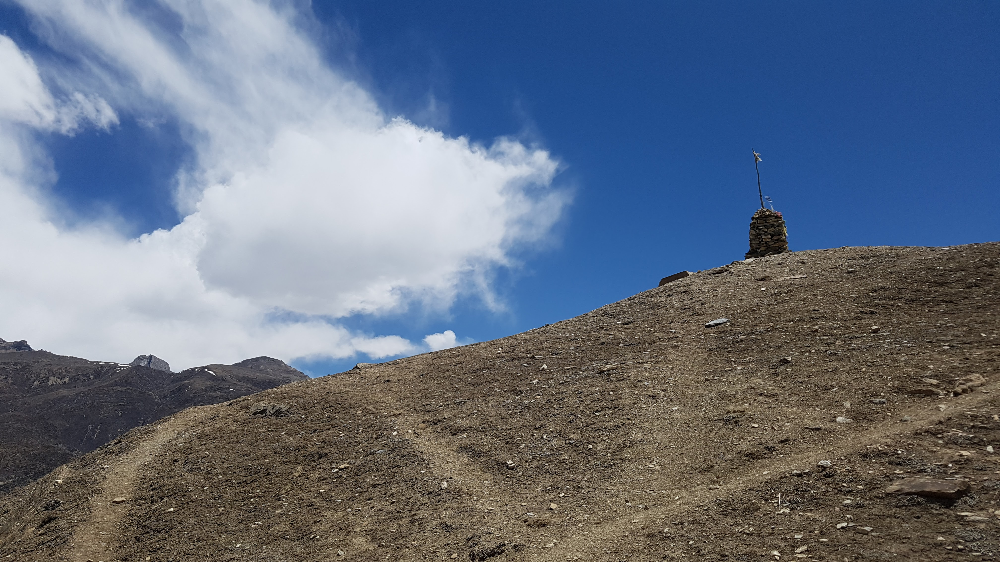

오늘은 걷지않고 쉬는날
2017년 04월 18일
여행 D+15, 안나푸르나 D+7
오늘 이동한 경로 (G) (총 5km?)
manang -> gangapurna 호수 -> manang

오늘은 쉬는날!
고산병을 예방하기 위해 물을 많이 먹었더니 새벽에 쉬가마려 자주 깨게 된다. 오늘도 역시 깼다. 화장실이 멀리 있고 밖이 추우니 침낭을 떠나 소변을 보러 가기가 너무 힘들다. 결국 오늘도 새벽에 2번 깼다. 잘수있는 시간이 많았는데 충분히 잔건지는 잘 모르겠다.
오늘은 마낭에서 하루 쉬는 날이다. 고산병을 예방하기 위해서 보통 이 3500m고지에서 하루정도 더 머문다. 신체가 고산에 적응을할 시간이 필요하기 때문이다. 그래서 오늘은 안나푸르나 트레킹 중 가장 할일이 없는 날이다.
아침에 패트릭이랑 타쿠어랑 마낭 근처에 있는 강가푸르나 호수를 구경하고 오기로 했다. 오늘은 숙소에 짐을 두고 빈 베낭만 베고 갔는데도 언덕을 오를 때 힘들었다. 지금까지 생각보다 높은 경사는 오르지 않았나보다. 곧 5400미터 쏘롱라 패스를 넘을 텐데 잘 할 수 있을까? 오늘은 최대한 높은 고지에 가서 고산에 적응했는지 확인해보는 훈련은 하면 좋을것 같았다.
강가푸르나 호수는 점점 작아지고 있다고 한다. 그래도 아직 무척 아름다웠다. 히말라야에는 물 색깔이 에메랄드 녹색인데 무척 신기하고 아름답다.
 강가푸르나 호수 옆에서 포즈를 잡고 있는 패트릭과 타쿠어
강가푸르나 호수 옆에서 포즈를 잡고 있는 패트릭과 타쿠어
호수가 보이는 곳에서 더 높이 올라갈수 있는 길이 있다. 더 올라가다가 나는 좀 뒤쳐져서 결국 패트릭과 타쿠어와 떨어지게 되었다. 계속 올라가다가 최대한 멀리 가보기로 했다. 결국 3900 미터 고지까지 올라갔다. 마낭근처 에서 제일 높은곳이다. 고산증세가 있는지 실험하러 올라갔는데 다행이 고산증세는 없었다. 3900미터까지는 문제없다. 오예!
 3900m 높이의 언덕. 고산예방을 위해 올랐다.
문득 두려워졌다. 이 멋진 평경들 설산들이 익숙해져서 별감흥없이 그저 그렇게 보이면 어떻하지. 여기 사는 현지인들은 어떨까? 이 설산에 별로 감흥을 느끼지 못하지 않을까? 맨날 보는 장면이니 말이다. 멋진장관에 익숙해지고 여행 자체에 익숙해지는 순간이 있다고 한다. 여행자들이 슬럼프를 느끼는 시점이라고 한다. 그런 순간이 오지 않기를 희망할 뿐이다.
돌아오니 한 12시즘 되었다. 오는길에 OTG케이블을 운좋게 구매했다. 고프로 SD카드를 핸드폰에서 바로 볼수 있게해주는 케이블이다. 원래 고프로 앱으로 사진을 핸드폰으로 받을수 있는데 안된다. 그래서 고프로에 있는 사진들을 하나도 볼 수 없었다. 구매해서 테스트 해봤는데 잘 동작한다. 이제 고프로 영상을 핸드폰으로 편하게 볼 수 있다.
점심을 먹었다. 이제 뭘해야할지 모르겠다. 할일이 없다. 방에 들어가서 서서 멍때리고 있었다. 편하게 앉아있지도 못한다. 침대의 배드벅이 우려되서 침낭없이는 눕지도 못한다. 오늘 같은 숙소에서 묶고 있고 어제 찬물로 샤워를 했기 때문에 샤워를 하기도 힘들었다.
그냥 문밖에 멍때리고 서있었는데 옆방 패트릭이 샤워를 하고 왔다고 한다. 그래서 샤워하기 무섭다고 말했더니 지금 따듯한물 나온다고 한다. 패트릭이 3층에서 샤워를 했다고 한다. 1층 화장실물 온도를 확인해봣는데 뜨겁지 않았다. 당장 3층으로 올라가 샤워를 하기로 했다! 갑자기 할일이 생겨서 기분이 좋았다. 해야할 일들에 지쳐서 이지경이 됐는데 갑자기 해야할 일이 없으니 혼란스러워 하고 있다. 흠.
샤워를 마치고 빨래도 마쳤다. 4시정도가 되었다. 엄청 개운하고 기분 좋았다. 1층은 미지근하고 3층은 뜨거운 이유를 알았다. 윗층에 태양열 보일러와 물탱크가 있는데 1층으로 내려가는 호스 단열이 좋지 않아 1층에서 물이 많이 미지근해지는 것이다. 앞으로 온수샤워를 하기 위해서는 최대한 보일러 물탱크에 가까이 가라! 제3세계에서의 생존 방법중 하나라는것을 깨달았다.
패트릭에세 어떻게 3층이 뜨거운물이 나오는지 알았냐고 칭찬해줬다. 그는 그냥 3층에 갔었던 거라고 한다. 어쨋든 둘다 시간이 남아서 마낭을 한바퀴 돌아봤다. 이곳에는 특이하게 영화를 볼수 있는 장소가 있다. 꽤 많은 가게에서 영화 상영을 한다. 영화종류는 많지 않은데 보통 히말라야 산이 배경으로 나오거나 트레킹 관련주제의 영화들이다. 티벳에서의 7년, 에베레스느, 인투더 와일드 등을 상영한다. 패트릭과 나는 영화를 좋아하기 때문에 5시에 상영하는 영화가 있으면 같이 보자고 생각했다.
같이 잠시 가게에 들렸는데 패트릭이 포커 카드를 구매했다. 돌아와서 게임을 했는데 로즈도 지나가다가 동참했다. 그러다가 로미로도 동참했다. 하트라는 게임을 했는데 규칙이 넘나 혼란스러웠다. 결국 내가 졌다. 그래도 무척 재미있게 게임했다. 이런 저런 농담도 하면서 진짜 즐거운 시간을 보냈다. 로즈가 카드를 섞다가 한두개가 뒤집혀 섞였다. 한국에서는 트릭 쓰다 걸리면 손 모가지 짤린다고, 왼손과 오른손중에 선택하라고 했더니 겁나 좋아한다.
어제 밤에 드디어 젊은 한국인을 만났다. 그들과 대화했는데 썩 유쾌하지는 않았다. 이 트레킹 구간이 차길에 먼지도 많고 경치도 안좋고 구리다는 그들의 의견에 그자리에서 나도 수긍 했기때문이다. 동행이 있으면 내 생각이 상당히 영향을 받는다. 생각의 중심을 잡지 못하면 바로 무너진다.